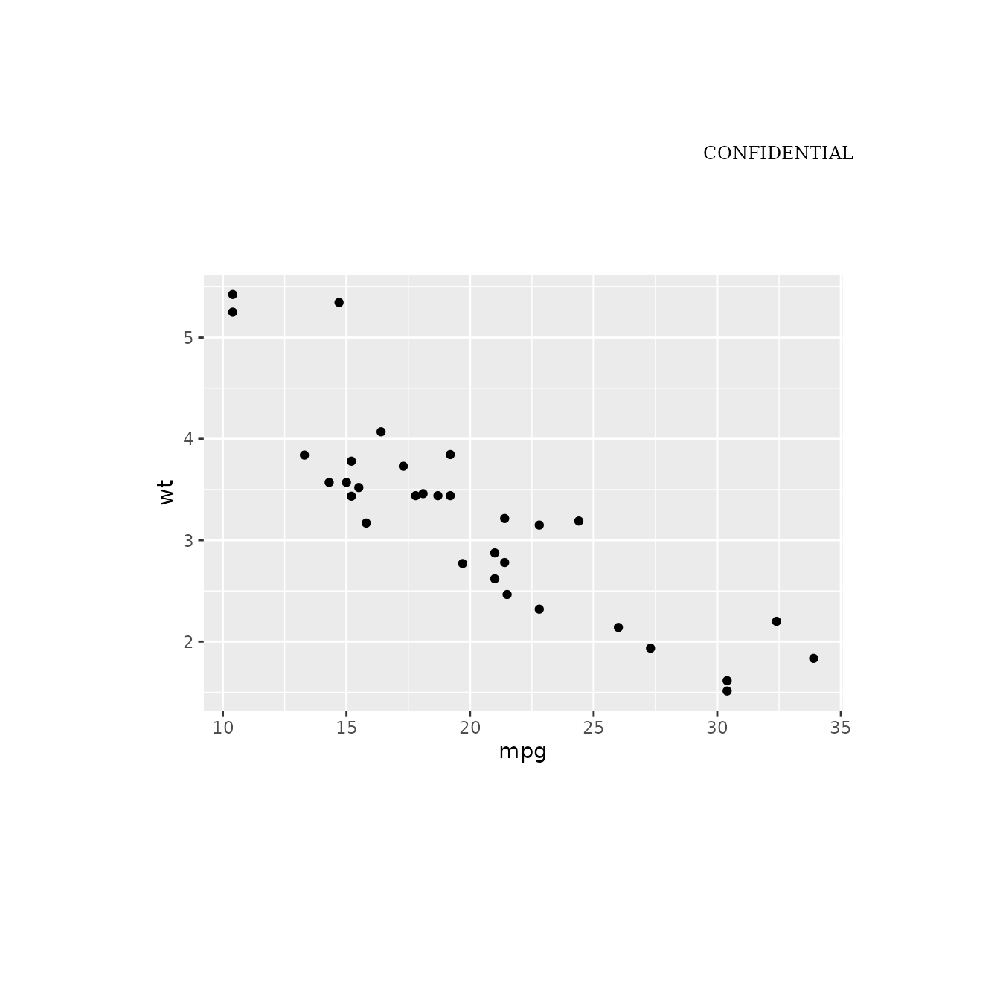
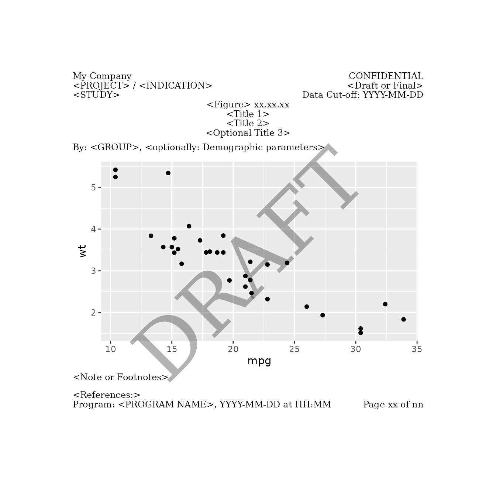
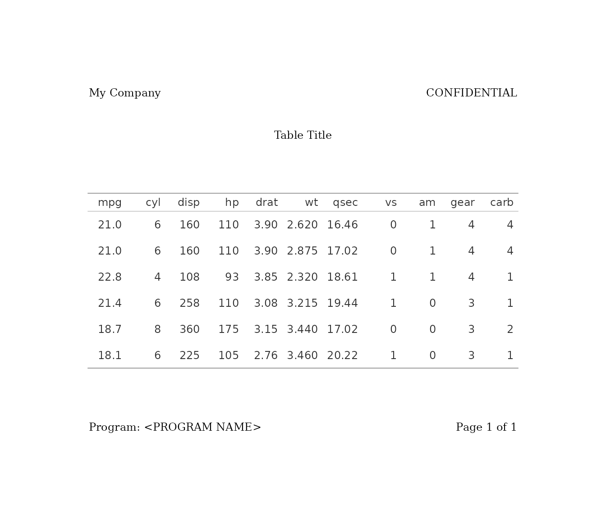

In the pharmaceutical industry, and many other fields that rely heavily on data reporting, there is often a need to create tables and figures with specific text elements — like titles, subtitles, captions, and footnotes — positioned consistently around the output. Manually arranging these elements can be time-consuming and prone to inconsistencies across projects.
gridify addresses this by building on the base R
[grid](https://cran.r-project.org/package=grid) package,
making it easy to add flexible, customizable elements around a plot or
table. This ensures a consistent layout for text elements (like headers,
footers, etc.) across various output types, such as:
ggplot2 objects
flextable tables
gt tables
Base R figures
Any grid-convertible object (e.g., grob, gtable)
Because gridify is based on a graphical system, even
tables become graphical objects (grobs) under the hood, meaning the end
result is always an image.
If gridify is not yet on CRAN, you can install it from
Pharmaverse GitHub (example):
devtools::install_github("pharmaverse/gridify", dependencies = TRUE, build_manual = TRUE, build_vignettes = TRUE)or from the source after git clone, for example:
devtools::install("gridify")Then load gridify:
gridify().set_cell() for
headers, footers, notes, etc.Below is a minimal example using ggplot2 for
demonstration. The same approach works for gt,
flextable, or base R figures.
For rtables, convert them into a flextable
using rtables.officer::tt_to_flextable() before following
this approach.
library(ggplot2)
basic_plot <- ggplot2::ggplot(mtcars, ggplot2::aes(x = mpg, y = wt)) +
ggplot2::geom_point()(For tables, simply replace basic_plot with your
gt or flextable object.)
In the gridify package, a layout is a
predefined structure that determines how various elements of an output
are arranged. It defines the positions of different components such as
the output, title, subtitle, footnotes, etc., on the available area.
Layouts in gridify define where to place titles,
footers, subtitles, etc., so your figures (or tables, or any grobs) have
consistent text elements.
You can use built-in layouts or create your own (see
vignette("create_custom_layout", package = "gridify")).
The built-in layouts include:
| Function | Description |
|---|---|
simple_layout() |
A layout with two cells: title (top) and
footer (bottom). |
complex_layout() |
A multi-cell layout including header_left,
header_middle, header_right,
title, subtitle, note,
footer_left, footer_middle, and
footer_right. |
pharma_layout_base() |
A base layout for pharmaceutical outputs, with predefined cells for headers, footers, titles, subtitles, notes, and references (defaults can be overwritten). |
pharma_layout_letter() |
A layout for pharmaceutical letters, with predefined cells for headers, footers, titles, subtitles, notes, and references (defaults can be overwritten). |
pharma_layout_A4() |
Similar to pharma_layout_letter(), but for A4
size. |
pharma_layout_letter()
#> gridifyLayout object
#> ---------------------
#> Layout dimensions:
#> Number of rows: 14
#> Number of columns: 3
#>
#> Heights of rows:
#> Row 1: 1 lines
#> Row 2: 1 lines
#> Row 3: 1 lines
#> Row 4: 1 lines
#> Row 5: 1 lines
#> Row 6: 1 lines
#> Row 7: 0 lines
#> Row 8: 0 lines
#> Row 9: 1 lines
#> Row 10: 1 null
#> Row 11: 1 lines
#> Row 12: 1 lines
#> Row 13: 0 lines
#> Row 14: 1 lines
#>
#> Widths of columns:
#> Column 1: 0.333333333333333 npc
#> Column 2: 0.333333333333333 npc
#> Column 3: 0.333333333333333 npc
#>
#> Object Position:
#> Row: 10
#> Col: 1-3
#> Width: 1
#> Height: 1
#>
#> Object Row Heights:
#> Row 10: 1 null
#>
#> Margin:
#> Top: 1 inches
#> Right: 1 inches
#> Bottom: 1.23 inches
#> Left: 1 inches
#>
#> Global graphical parameters:
#> fill: transparent
#> col: black
#> lty: solid
#> lwd: 1
#> cex: 1
#> fontsize: 9
#> lineheight: 0.95
#> font: 1
#> fontfamily: serif
#> alpha: 1
#> lineend: round
#> linejoin: round
#> linemitre: 10
#> lex: 1
#>
#> Default Cell Info:
#> header_left_1:
#> row:1, col:1, text:NULL, mch:Inf, x:0, y:0.5, hjust:0, vjust:0.5, rot:0,
#> header_left_2:
#> row:2, col:1, text:NULL, mch:Inf, x:0, y:0.5, hjust:0, vjust:0.5, rot:0,
#> header_left_3:
#> row:3, col:1, text:NULL, mch:Inf, x:0, y:0.5, hjust:0, vjust:0.5, rot:0,
#> header_right_1:
#> row:1, col:3, text:CONFIDENTI..., mch:Inf, x:1, y:0.5, hjust:1, vjust:0.5, rot:0,
#> header_right_2:
#> row:2, col:3, text:NULL, mch:Inf, x:1, y:0.5, hjust:1, vjust:0.5, rot:0,
#> header_right_3:
#> row:3, col:3, text:NULL, mch:Inf, x:1, y:0.5, hjust:1, vjust:0.5, rot:0,
#> output_num:
#> row:4, col:2, text:NULL, mch:Inf, x:0.5, y:0.5, hjust:0.5, vjust:0.5, rot:0,
#> title_1:
#> row:5, col:2, text:NULL, mch:Inf, x:0.5, y:0.5, hjust:0.5, vjust:0.5, rot:0,
#> title_2:
#> row:6, col:2, text:NULL, mch:Inf, x:0.5, y:0.5, hjust:0.5, vjust:0.5, rot:0,
#> title_3:
#> row:7, col:2, text:NULL, mch:Inf, x:0.5, y:0.5, hjust:0.5, vjust:0.5, rot:0,
#> by_line:
#> row:89, col:13, text:NULL, mch:Inf, x:0, y:0.5, hjust:0, vjust:0.5, rot:0,
#> note:
#> row:11, col:13, text:NULL, mch:100, x:0, y:0.5, hjust:0, vjust:0.5, rot:0,
#> references:
#> row:13, col:1, text:NULL, mch:Inf, x:0, y:0.5, hjust:0, vjust:0.5, rot:0,
#> footer_left:
#> row:14, col:1, text:NULL, mch:Inf, x:0, y:0.5, hjust:0, vjust:0.5, rot:0,
#> footer_right:
#> row:14, col:3, text:NULL, mch:Inf, x:1, y:0.5, hjust:1, vjust:0.5, rot:0,
#> watermark:
#> row:10, col:2, text:NULL, mch:Inf, x:0.5, y:0.5, hjust:0.5, vjust:0.5, rot:45,
#> gpar - fontsize:80, alpha:0.3,Use the gridify() function to combine your object
(figure or table) with the specified layout:
grob_object <- gridify(
object = basic_plot,
layout = pharma_layout_letter()
)Use the show method (return the object) to check out available cells.
grob_object
#> gridifyClass object
#> ---------------------
#> Please run `show_spec(object)` or print the layout to get more specs.
#>
#> Cells:
#> header_left_1: empty
#> header_left_2: empty
#> header_left_3: empty
#> header_right_1: filled
#> header_right_2: empty
#> header_right_3: empty
#> output_num: empty
#> title_1: empty
#> title_2: empty
#> title_3: empty
#> by_line: empty
#> note: empty
#> references: empty
#> footer_left: empty
#> footer_right: empty
#> watermark: empty
You can add text to labeled cells (headers, footers, notes, etc.).
grob_object <- grob_object %>%
set_cell("header_left_1", "My Company") %>%
set_cell("header_left_2", "<PROJECT> / <INDICATION>") %>%
set_cell("header_left_3", "<STUDY>") %>%
set_cell("header_right_1", "CONFIDENTIAL") %>%
set_cell("header_right_2", "<Draft or Final>") %>%
set_cell("header_right_3", "Data Cut-off: YYYY-MM-DD") %>%
set_cell("output_num", "<Figure> xx.xx.xx") %>%
set_cell("title_1", "<Title 1>") %>%
set_cell("title_2", "<Title 2>") %>%
set_cell("title_3", "<Optional Title 3>") %>%
set_cell("by_line", "By: <GROUP>, <optionally: Demographic parameters>") %>%
set_cell("note", "<Note or Footnotes>") %>%
set_cell("references", "<References:>") %>%
set_cell("footer_left", "Program: <PROGRAM NAME>, YYYY-MM-DD at HH:MM") %>%
set_cell("footer_right", "Page xx of nn") %>%
set_cell("watermark", "DRAFT")
grob_object
#> gridifyClass object
#> ---------------------
#> Please run `show_spec(object)` or print the layout to get more specs.
#>
#> Cells:
#> header_left_1: filled
#> header_left_2: filled
#> header_left_3: filled
#> header_right_1: filled
#> header_right_2: filled
#> header_right_3: filled
#> output_num: filled
#> title_1: filled
#> title_2: filled
#> title_3: filled
#> by_line: filled
#> note: filled
#> references: filled
#> footer_left: filled
#> footer_right: filled
#> watermark: filled
The output is automatically drawn for the user.
Calling print() on a gridify object
displays the final layout in your R session, and invisibly returns the
grid grob:
final_grob <- print(grob_object)Raw grid code behind:
final_grob
#> grid::gTree(children = do.call(grid::gList, list(grid::grobTree(grid::editGrob(OBJECT,
#> vp = grid::viewport(height = grid::unit.pmax(grid::unit(1,
#> "npc"), grid::unit(1, "inch")), width = grid::unit.pmax(grid::unit(1,
#> "npc"), grid::unit(1, "inch")))), vp = grid::viewport(layout.pos.row = 10,
#> layout.pos.col = c(1, 3))), grid::grobTree(grid::textGrob(label = "My Company",
#> x = 0, y = 0.5, hjust = 0, vjust = 0.5, rot = 0, gp = grid::gpar(fontsize = 9)),
#> gp = grid::gpar(), vp = grid::viewport(layout.pos.row = 1,
#> layout.pos.col = 1)), grid::grobTree(grid::textGrob(label = "<PROJECT> / <INDICATION>",
#> x = 0, y = 0.5, hjust = 0, vjust = 0.5, rot = 0, gp = grid::gpar(fontsize = 9)),
#> gp = grid::gpar(), vp = grid::viewport(layout.pos.row = 2,
#> layout.pos.col = 1)), grid::grobTree(grid::textGrob(label = "<STUDY>",
#> x = 0, y = 0.5, hjust = 0, vjust = 0.5, rot = 0, gp = grid::gpar(fontsize = 9)),
#> gp = grid::gpar(), vp = grid::viewport(layout.pos.row = 3,
#> layout.pos.col = 1)), grid::grobTree(grid::textGrob(label = "CONFIDENTIAL",
#> x = 1, y = 0.5, hjust = 1, vjust = 0.5, rot = 0, gp = grid::gpar(fontsize = 9)),
#> gp = grid::gpar(), vp = grid::viewport(layout.pos.row = 1,
#> layout.pos.col = 3)), grid::grobTree(grid::textGrob(label = "<Draft or Final>",
#> x = 1, y = 0.5, hjust = 1, vjust = 0.5, rot = 0, gp = grid::gpar(fontsize = 9)),
#> gp = grid::gpar(), vp = grid::viewport(layout.pos.row = 2,
#> layout.pos.col = 3)), grid::grobTree(grid::textGrob(label = "Data Cut-off: YYYY-MM-DD",
#> x = 1, y = 0.5, hjust = 1, vjust = 0.5, rot = 0, gp = grid::gpar(fontsize = 9)),
#> gp = grid::gpar(), vp = grid::viewport(layout.pos.row = 3,
#> layout.pos.col = 3)), grid::grobTree(grid::textGrob(label = "<Figure> xx.xx.xx",
#> x = 0.5, y = 0.5, hjust = 0.5, vjust = 0.5, rot = 0, gp = grid::gpar(fontsize = 9)),
#> gp = grid::gpar(), vp = grid::viewport(layout.pos.row = 4,
#> layout.pos.col = 2)), grid::grobTree(grid::textGrob(label = "<Title 1>",
#> x = 0.5, y = 0.5, hjust = 0.5, vjust = 0.5, rot = 0, gp = grid::gpar(fontsize = 9)),
#> gp = grid::gpar(), vp = grid::viewport(layout.pos.row = 5,
#> layout.pos.col = 2)), grid::grobTree(grid::textGrob(label = "<Title 2>",
#> x = 0.5, y = 0.5, hjust = 0.5, vjust = 0.5, rot = 0, gp = grid::gpar(fontsize = 9)),
#> gp = grid::gpar(), vp = grid::viewport(layout.pos.row = 6,
#> layout.pos.col = 2)), grid::grobTree(grid::textGrob(label = "<Optional Title 3>",
#> x = 0.5, y = 0.5, hjust = 0.5, vjust = 0.5, rot = 0, gp = grid::gpar(fontsize = 9)),
#> gp = grid::gpar(), vp = grid::viewport(layout.pos.row = 7,
#> layout.pos.col = 2)), grid::grobTree(grid::textGrob(label = "By: <GROUP>, <optionally: Demographic parameters>",
#> x = 0, y = 0.5, hjust = 0, vjust = 0.5, rot = 0, gp = grid::gpar(fontsize = 9)),
#> gp = grid::gpar(), vp = grid::viewport(layout.pos.row = 8:9,
#> layout.pos.col = c(1, 3))), grid::grobTree(grid::textGrob(label = "<Note or Footnotes>",
#> x = 0, y = 0.5, hjust = 0, vjust = 0.5, rot = 0, gp = grid::gpar(fontsize = 9)),
#> gp = grid::gpar(), vp = grid::viewport(layout.pos.row = 11,
#> layout.pos.col = c(1, 3))), grid::grobTree(grid::textGrob(label = "<References:>",
#> x = 0, y = 0.5, hjust = 0, vjust = 0.5, rot = 0, gp = grid::gpar(fontsize = 9)),
#> gp = grid::gpar(), vp = grid::viewport(layout.pos.row = 13,
#> layout.pos.col = 1)), grid::grobTree(grid::textGrob(label = "Program: <PROGRAM NAME>, YYYY-MM-DD at HH:MM",
#> x = 0, y = 0.5, hjust = 0, vjust = 0.5, rot = 0, gp = grid::gpar(fontsize = 9)),
#> gp = grid::gpar(), vp = grid::viewport(layout.pos.row = 14,
#> layout.pos.col = 1)), grid::grobTree(grid::textGrob(label = "Page xx of nn",
#> x = 1, y = 0.5, hjust = 1, vjust = 0.5, rot = 0, gp = grid::gpar(fontsize = 9)),
#> gp = grid::gpar(), vp = grid::viewport(layout.pos.row = 14,
#> layout.pos.col = 3)), grid::grobTree(grid::textGrob(label = "DRAFT",
#> x = 0.5, y = 0.5, hjust = 0.5, vjust = 0.5, rot = 45, gp = grid::gpar(fontsize = 80)),
#> gp = grid::gpar(fontsize = 80, alpha = 0.3), vp = grid::viewport(layout.pos.row = 10,
#> layout.pos.col = 2)))), vp = grid::viewport(name = "lyt",
#> x = grid::unit(1, "inches"), y = grid::unit(1.23, "inches"),
#> just = c("left", "bottom"), width = grid::unit(1, "npc") -
#> grid::unit(1, "inches") - grid::unit(1, "inches"), height = grid::unit(1,
#> "npc") - grid::unit(1, "inches") - grid::unit(1.23, "inches"),
#> gp = grid::gpar(fill = "transparent", col = "black", lty = "solid",
#> lwd = 1, cex = 1, fontsize = 9, lineheight = 0.95, fontfamily = "serif",
#> alpha = 1, lineend = "round", linejoin = "round", linemitre = 10,
#> lex = 1, fontface = 1L), layout = grid::grid.layout(nrow = 14L,
#> ncol = 3L, heights = grid::unit(c(0.34, 0.34, 0.34, 0.34,
#> 0.34, 0.34, 0.34, 0.34, 0.34, 1, 0.34, 1, 0.34, 0.34),
#> c("cm", "cm", "cm", "cm", "cm", "cm", "cm", "cm",
#> "cm", "null", "cm", "lines", "cm", "cm")), widths = grid::unit(c(0.33,
#> 0.33, 0.33), c("npc", "npc", "npc")))))
#> attr(,"env")
#> <environment: 0x55c3a9df3800>gridify uses meta-programming to capture all
grid calls needed to assemble your layout. That means you
can retrieve or audit exactly how the figure or table is constructed.
This functionality is particularly valuable in regulated environments
(e.g., pharmaceuticals) or whenever transparency and consistency are
critical.
Below is a quick example from the README, using a gt
table:
library(gt)
tab <- gt::gt(head(mtcars)) %>%
gt::tab_options(
table.width = gt::pct(100),
data_row.padding = gt::px(10),
table_body.hlines.color = "white",
table.font.size = 12
)
gridify(
object = tab,
layout = pharma_layout_base()
) %>%
set_cell("header_left_1", "My Company") %>%
set_cell("header_right_1", "CONFIDENTIAL") %>%
set_cell("title_1", "Table Title") %>%
set_cell("footer_left", "Program: <PROGRAM NAME>") %>%
set_cell("footer_right", "Page 1 of 1")
#> gridifyClass object
#> ---------------------
#> Please run `show_spec(object)` or print the layout to get more specs.
#>
#> Cells:
#> header_left_1: filled
#> header_left_2: empty
#> header_left_3: empty
#> header_right_1: filled
#> header_right_2: empty
#> header_right_3: empty
#> output_num: empty
#> title_1: filled
#> title_2: empty
#> title_3: empty
#> by_line: empty
#> note: empty
#> references: empty
#> footer_left: filled
#> footer_right: filled
#> watermark: empty
This wraps the gt table in a pharma-style layout,
placing headers and footers around it.
To save gridify drawings to files see
vignette("simple_examples", package = "gridify").
vignette("simple_examples", package = "gridify")vignette("multi_page_examples", package = "gridify")vignette("create_custom_layout", package = "gridify")vignette("transparency", package = "gridify")
That’s it! gridify enables you to consistently position
text elements around any figures or tables, all while letting you
leverage base R grid for maximum control and transparency.
By defining or customizing a layout once, you can reuse it across
multiple outputs—saving time and ensuring consistency.